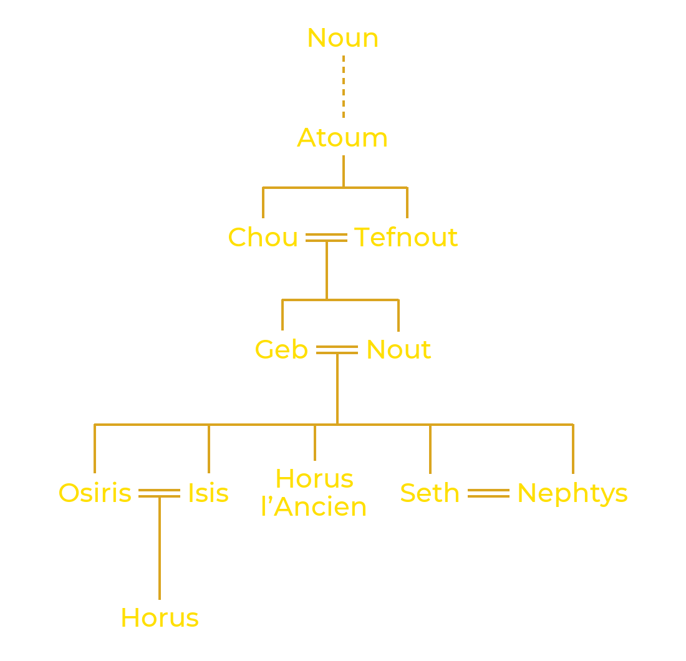

Héliopolis, la « ville du soleil » des Grecs, s’appelait Iounou en égyptien. Située aux portes du Caire actuel, elle fut dès l’Ancien Empire le grand centre du culte solaire, et ses prêtres élaborèrent le récit de la création le plus répandu d’Égypte.
Au commencement, il n’existait qu’un océan sans limites, inerte et plongé dans l’obscurité : le Noun. De ces eaux émergea Atoum, dont le nom signifie à la fois « Celui qui est complet » et « Celui qui n’est pas encore » : il contenait en lui tout ce qui allait exister. Atoum se créa lui-même, en prenant conscience de sa propre existence. Il fit alors surgir des eaux une butte de terre, le Benben, pour pouvoir s’y tenir. Certains textes racontent qu’il y apparut sous la forme du Bennou, un oiseau semblable à un héron, que les Grecs rapprochèrent plus tard du phénix.
Seul, sans compagne, Atoum tira de lui-même un premier couple divin. Selon les versions, il s’unit à sa propre main, ou bien il cracha et éternua : de son éternuement naquit Chou, dieu de l’air et de la lumière, et de son crachat Tefnout, déesse de l’humidité. Frère et sœur, ils furent aussi mari et femme, et forment le premier couple de la Création.
Avec eux apparut Maât, l’ordre du monde. Plus qu’une déesse, Maât est le principe qui fait tenir l’univers : la justice, la vérité, le cours régulier du soleil et des saisons. Elle s’oppose à l’isfet, le désordre, qui menace sans cesse de ramener le monde au chaos des origines.

De l’union de Chou et de Tefnout naquirent Geb, la terre, et Nout, le ciel. Tous deux étaient si étroitement enlacés que rien ne pouvait exister entre eux. Sur l’ordre d’Atoum, Chou se glissa entre ses enfants et souleva Nout à bout de bras, tandis que Geb restait allongé au sol. Ainsi s’ouvrit l’espace où l’air circule, où la lumière brille et où la vie peut se développer.
Nout, arquée au-dessus de la terre, ne touche plus son époux que du bout des mains et des pieds. Le soleil parcourt son corps le jour ; chaque soir elle l’avale, et chaque matin elle lui donne une nouvelle naissance. Le Noun, lui, fut repoussé au-delà des limites de ce monde, qu’il entoure toujours comme une menace silencieuse.

Les hommes, eux aussi, doivent leur existence au démiurge. Un récit raconte que Chou et Tefnout, encore enfants, s’étaient perdus dans les ténèbres du Noun. Atoum envoya son Œil à leur recherche. Lorsqu’il les vit revenir, il pleura de joie, et ses larmes donnèrent naissance aux premiers humains.
Les Textes des Sarcophages, textes funéraires du Moyen Empire (vers 2000-1700 av. J.-C.), font dire au créateur : « Les hommes sont les larmes de mon œil. » Ce récit repose sur un jeu de mots : en égyptien, « larmes » se dit remyt et « hommes » remetch.
Le calendrier égyptien comptait douze mois de trente jours, soit 360 jours. Selon une légende rapportée par Plutarque, Rê, craignant d’être détrôné, avait interdit à Nout d’accoucher un seul jour de l’année. Thot, le dieu de la sagesse, vint à son secours : il joua aux dés contre la Lune et lui gagna une petite part de sa lumière, de quoi former cinq jours supplémentaires, placés hors de l’année. Pendant ces jours, Nout put enfin mettre ses enfants au monde.
Ces cinq jours sont appelés « épagomènes », du grec epagomenai hêmerai, les « jours ajoutés ». Chacun vit naître un dieu : le premier Osiris, le deuxième Horus l’Ancien (à ne pas confondre avec Horus, le fils d’Isis et d’Osiris), le troisième Seth, le quatrième Isis et le cinquième Nephtys. Les Égyptiens tenaient ces jours pour dangereux, en particulier le troisième, celui de la naissance de Seth.

Les théologiens d’Héliopolis réunirent ces dieux en un groupe de neuf, l’Ennéade, qui rassemble les forces nécessaires à l’existence d’un monde ordonné : le démiurge Atoum, ses enfants Chou et Tefnout, ses petits-enfants Geb et Nout, puis les enfants de ces derniers, à l’exception d’Horus l’Ancien, soit les deux couples formés par Osiris et Isis, Seth et Nephtys. Atoum, souvent confondu avec Rê sous le nom de Rê-Atoum, se tient à la tête de cette famille divine.
La Création n’a pas fait disparaître le Noun : elle l’a seulement repoussé. Tout ce qui n’a pas été créé continue d’exister à ses marges et menace l’ordre établi. La plus redoutable de ces forces est Apophis, un serpent gigantesque né des eaux primordiales. Chaque soir, quand le soleil quitte le ciel du jour, sa barque s’engage pour douze heures dans le monde de la nuit, et Apophis tente de la dévorer. Comme Atoum, Apophis n’a pas été créé : il ne peut donc pas être détruit, seulement repoussé, nuit après nuit, pour que le soleil puisse renaître à l’aube.